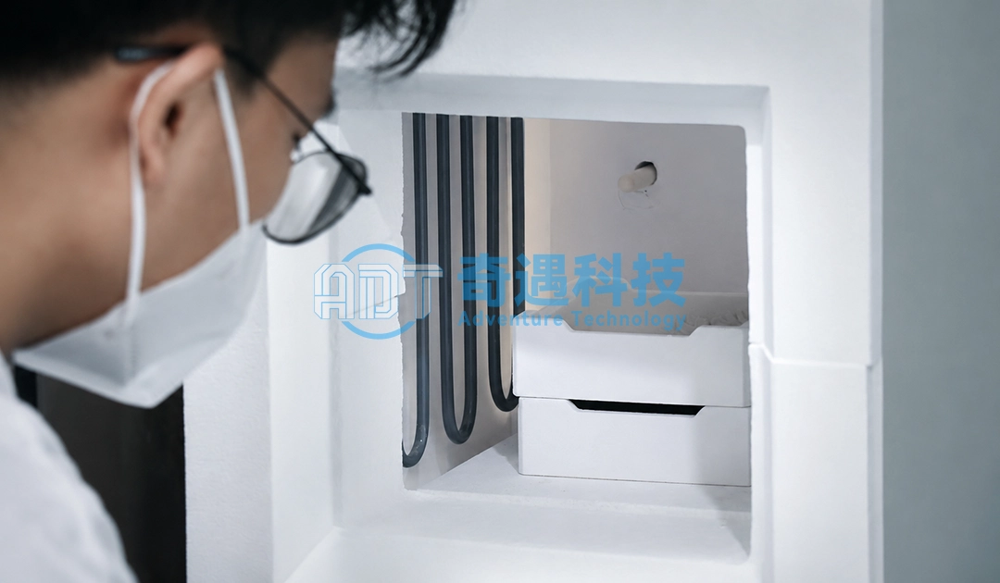
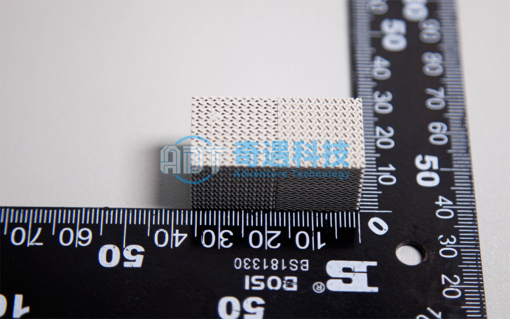
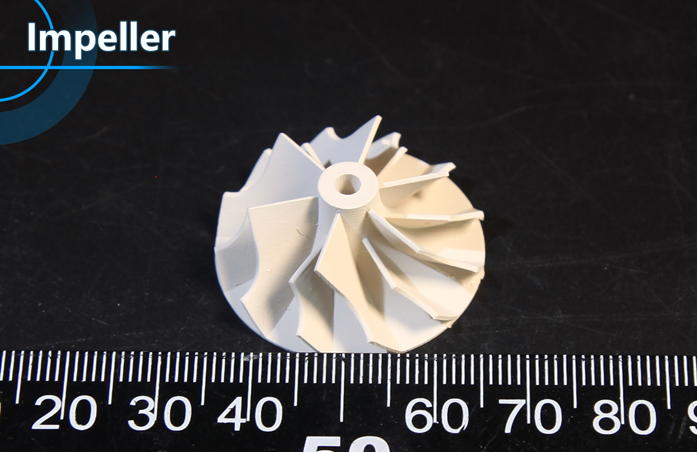
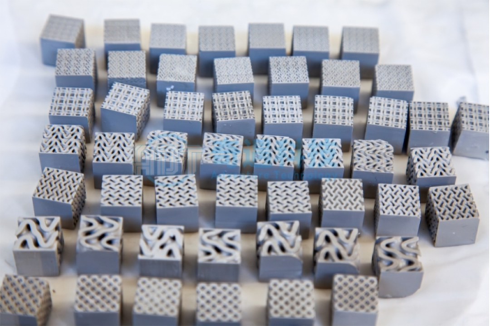

In advanced ceramics, silicon nitride (Si₃N₄) is not defined by whether it can be sintered successfully, but by how the sintering pathway shapes its final performance. In real engineering environments, two components made from the same chemical composition can behave completely differently under thermal shock, mechanical load, or long-term fatigue—simply because their sintering mechanisms were not the same.
This is why, in industrial practice, the focus has shifted from “material selection” to process-controlled microstructure engineering.
For Ceramic 3D Printing Solutions Provider , this distinction is not theoretical. It directly determines whether silicon nitride components can move from laboratory-grade samples into aerospace systems, semiconductor equipment, or high-load mechanical assemblies.

Microstructure Engineering Begins at the Sintering Stage
The performance of silicon nitride ceramics is governed primarily by grain morphology, grain boundary phase chemistry, and residual porosity. These features are not corrected after sintering—they are created during it.
During densification, the material undergoes a transition from loosely packed powder to a continuous ceramic body. Depending on whether this transformation is driven by liquid-phase diffusion, external pressure, or electric-field-assisted heating, the resulting microstructure can be either stable and uniform or highly heterogeneous.
In industrial failure analysis, many issues traced in silicon nitride components—such as premature fracture in bearings or reduced creep resistance in turbine environments—are not caused by composition errors, but by uncontrolled grain boundary glass phases or incomplete densification during sintering.
This is why sintering is best understood not as a manufacturing step, but as a microstructure design process.
Pressureless Sintering: Scalable Production with Structural Trade-offs
The most widely used industrial route remains pressureless sintering, primarily due to its scalability and compatibility with complex geometries. In this process, sintering additives form a transient liquid phase that enables particle rearrangement and diffusion-driven densification.
From a production standpoint, this method is efficient and cost-effective, which is why it is still widely used in mass manufacturing of silicon nitride components.
However, the presence of a liquid phase introduces a structural compromise. After cooling, residual grain boundary glass often remains trapped within the microstructure. While this phase enables densification, it also becomes a weak point under high-temperature or cyclic loading conditions.
In real applications such as rotating mechanical systems or high-temperature structural parts, this residual phase can gradually soften, leading to creep deformation or reduced fatigue resistance. As a result, pressureless sintering is often best suited for general industrial components rather than extreme-performance environments.

Hot Pressing: When Density Becomes a Performance Requirement
When applications demand near-theoretical density and enhanced mechanical reliability, hot pressing sintering becomes a more appropriate route. By applying uniaxial pressure during high-temperature exposure, typically in the range of 20–40 MPa, pore elimination is accelerated and diffusion paths are shortened. For silicon nitride systems, sintering is commonly performed at temperatures around 1700–1800 °C under a controlled nitrogen atmosphere, enabling efficient densification while limiting excessive grain growth. The resulting silicon nitride typically exhibits significantly improved fracture toughness and flexural strength due to reduced residual porosity and improved grain bonding.
By applying uniaxial pressure during high-temperature exposure, pore elimination is accelerated and diffusion paths are shortened. The resulting silicon nitride typically exhibits significantly improved fracture toughness and mechanical strength.
In practical engineering terms, this method is often selected for components such as high-load bearings or wear-critical parts, where even micro-level porosity can act as a crack initiation site under repeated stress cycles.
However, this improvement comes with engineering constraints. Because pressure is applied in a single direction, the resulting microstructure may develop direction-dependent properties, which must be considered during component design. In addition, tooling limitations restrict part size and geometry complexity.
As a result, hot pressing is typically used in high-value, performance-critical components rather than large-scale industrial production.
Gas Pressure Sintering: Balancing Strength and Structural Stability
Gas pressure sintering (GPS) provides a more balanced densification route by applying isotropic gas pressure in an inert atmosphere during high-temperature processing. Compared with uniaxial hot pressing, it avoids directional stress, enabling more uniform shrinkage and densification throughout complex-shaped components.
A key advantage of GPS is its ability to control grain growth. By maintaining a moderate inert gas pressure (typically several MPa) at elevated sintering temperatures, it effectively suppresses abnormal grain coarsening and pore coalescence. The process is conducted under tightly controlled conditions, using high-purity nitrogen (N₂) or argon (Ar) atmospheres, with sintering temperatures often exceeding 1700 °C for Si₃N₄-based ceramics. The applied gas pressure is generally in the range of 1–10 MPa (commonly 2–6 MPa in industrial practice), and is carefully ramped during the high-temperature hold stage. This coordinated control of temperature, pressure, and atmosphere ensures full densification while preserving a fine and uniform microstructure, thereby enhancing both mechanical reliability and thermal stability.
This combination of temperature–pressure–atmosphere control is especially important in environments involving cyclic thermal loading and mechanical fatigue. In such conditions, microstructural uniformity directly determines long-term reliability. GPS-processed silicon nitride, for example, maintains a fine, evenly distributed grain structure, which helps resist crack initiation and slows down fatigue-driven degradation.
A typical application is turbine impellers (or turbocharger rotors). These components operate under extremely high rotational speeds and rapid thermal transients. During service, they experience repeated thermal expansion–contraction cycles coupled with high centrifugal stress. GPS is particularly suitable here because it produces a dense, flaw-resistant microstructure without introducing anisotropy or residual stress gradients (which are more likely in uniaxial hot pressing). As a result, GPS-sintered Si₃N₄ impellers exhibit higher fracture reliability, better thermal shock resistance, and longer fatigue life—making this method one of the most reliable choices when both mechanical strength and thermal stability must be optimized simultaneously.

SPS: Rapid Densification with Microstructural Precision
Among modern sintering technologies, Spark Plasma Sintering (SPS) represents one of the most significant advances in process control.
Instead of relying solely on external heating, SPS introduces pulsed electric current directly through the powder compact. This generates localized Joule heating at particle contact points, enabling extremely rapid densification under applied pressure.
The most important outcome of this process is not speed alone, but microstructure preservation. Because thermal exposure time is minimized, grain growth is significantly suppressed. This allows silicon nitride to retain a fine-grained or even near-nano-scale structure.
In high-end applications such as precision tooling or experimental ceramic systems, this fine microstructure can translate into improved hardness, wear resistance, and mechanical consistency.
However, SPS is highly sensitive to processing parameters. Small deviations in current density, pressure profile, or heating rate can lead to significant variations in final properties. This makes it highly effective for R&D, prototyping, and advanced material development, but less suited for large-scale industrial throughput.
Emerging Manufacturing Routes and the Role of Ceramic 3D Printing
Beyond traditional sintering technologies, new approaches such as reaction sintering, microwave sintering, and laser-based processing are expanding the design space of silicon nitride ceramics.
Among these, the most transformative direction is the integration of sintering science with additive manufacturing of ceramics.
In this context, ceramic 3D printing is not simply a shaping method—it fundamentally changes how sintering must be designed. Complex geometries, internal channels, and functionally graded structures introduce new challenges in densification uniformity and thermal behavior during post-processing.
This is where companies such as ADT operate at the intersection of manufacturing innovation and material engineering, enabling silicon nitride components with geometries that conventional pressing or casting methods cannot achieve.
For instance, lattice-structured thermal components or custom-designed wear parts require not only precise printing, but also carefully controlled sintering strategies to ensure structural integrity after densification.

Conclusion: Sintering as the Core of Ceramic System Design
The evolution of silicon nitride ceramic sintering technologies reflects a broader shift in advanced manufacturing—from material-centric thinking to process-driven design.
Pressureless sintering prioritizes scalability. Hot pressing prioritizes mechanical limits. Gas pressure sintering balances stability and strength. SPS enables microstructural refinement through rapid processing. Emerging methods, including additive manufacturing integration, extend the possibilities of geometry and functional design.
In modern industrial practice, these methods are no longer competing alternatives. Instead, they are increasingly used as complementary tools within hybrid manufacturing strategies, selected based on application requirements rather than tradition.
Ultimately, silicon nitride is no longer just a high-performance ceramic material. It is a process-engineered system, where sintering defines performance as much as composition does—and where companies like ADT Ceramic 3DP are helping bridge the gap between advanced ceramic science and real-world engineering applications.